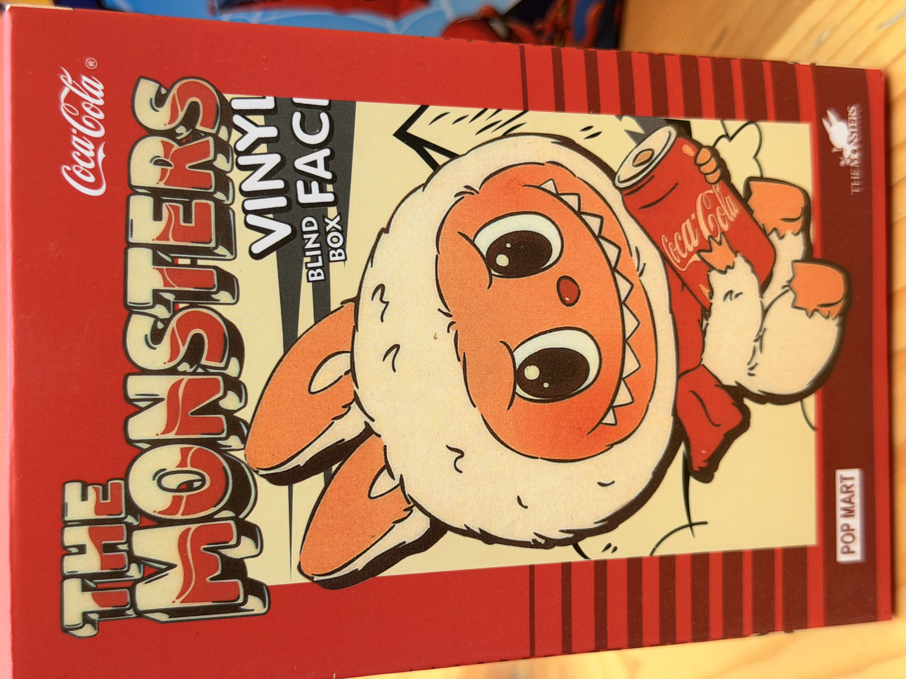
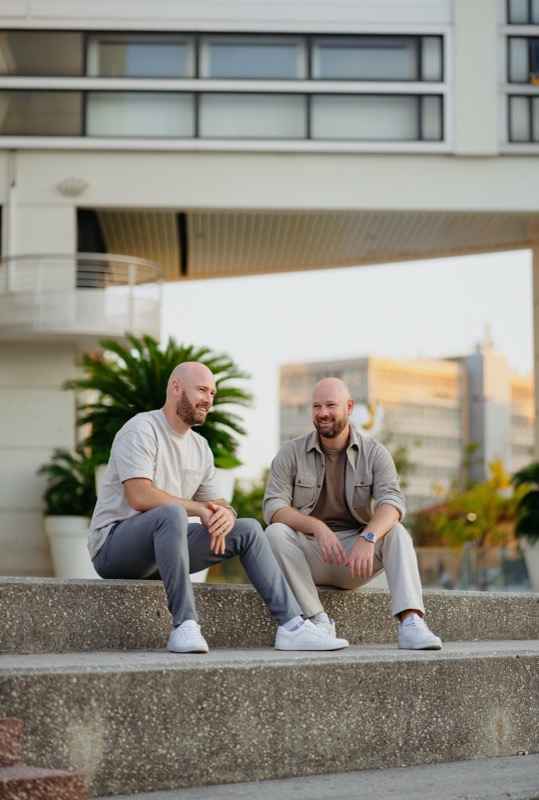
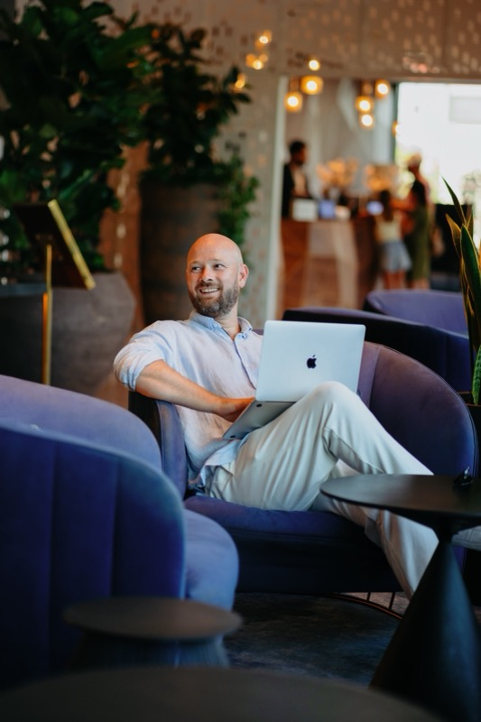
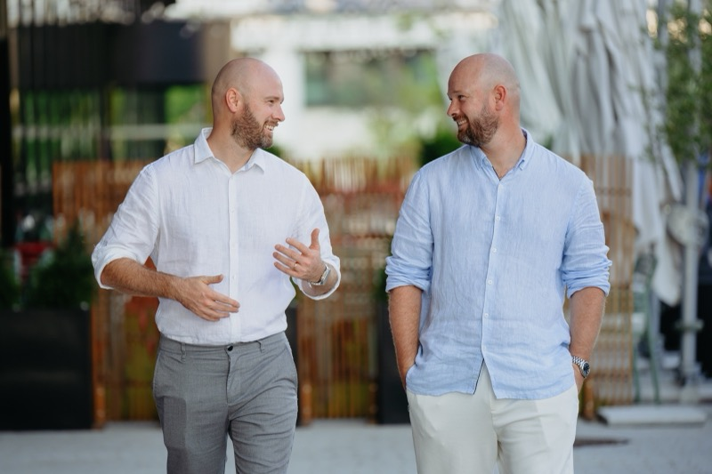

Changements vs V1 : rayures verticales vraiment visibles · halftone dots overlay (effet sérigraphie) · plus de cadre cream autour de la photo (la photo bleed sur le fond rayé via mask radial) · cadre intérieur cream type packaging · typo XXL Bungee chunky cartoon avec contour noir 4px et shadow 3D (façon « THE MONSTERS ») · logo « Jerwis » en script Lobster (clin d'œil Coca-Cola) · sticker étoile « NEW » oblique · cartouche catégorie incliné -4°.




À débloquer encore · vrai posterize photos (4 tons) demanderait ImageMagick. Les visages restent « photo réaliste » alors que la réf a une mascotte 100% cartoon. Si tu veux pousser plus loin → option C (IA cartoon des photos) reste la plus fidèle.